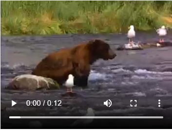

‹video width="320" height="240" controls>
‹source src="movie.mp4" type="video/mp4">
‹source src="movie.ogg" type="video/ogg">
‹/video>

Aby dodac film do strony należy uzyć znacznika ‹video>
‹video width="320" height="240" controls>
‹source src="movie.mp4" type="video/mp4">
‹source src="movie.ogg" type="video/ogg">
‹/video>
Aby dodac plik dzwiękowy do strony należy uzyć znacznika ‹audio>
‹audio width="320" height="240" controls>
‹source src="movie.ogg" type="audio/mp4">
‹source src="movie.mp3" type="audio/ogg">
‹/audio>
‹img src="" alt=""> Rozmiar obrazów można zmienić za pomocą stylu CSS, parametrem Width - Szerokość , Height - Wysokośc lub tramsform: scale(np. 0,7) oraz także można zdięcie przeskalować w programie graficznym, takim jak GIMP